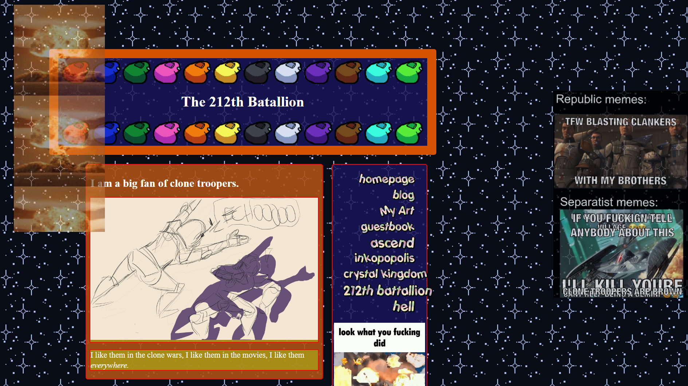
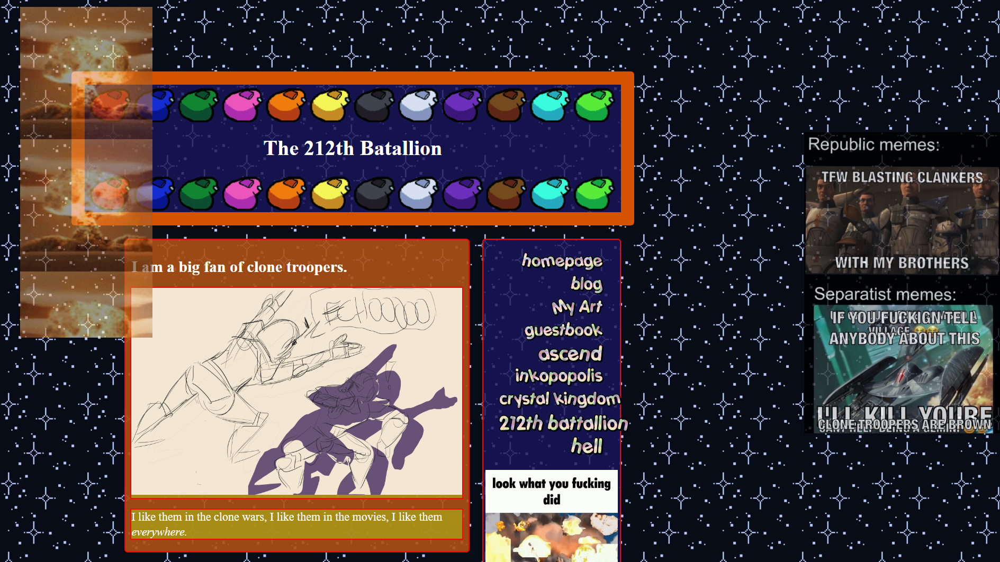

The curious will learn.
You are here, so you know
who this website
belongs to.
I think I am ready to be a part of this programme.
To learn more about the things that make me curious
and actually learn to understand and create in this
field of work.
From as young as I have been aware of computers, I
have been curious about how their internal
mechanisms function. As a younger child we did not
exactly have a computer at home on which I was
allowed to experiment, but I remember begging my
father to let me install minecraft mods. He did,
however, let me do classes and projects on
Code.org
He never let me install those mods though, too
afraid I would permanently damage something. Which
honestly, I would have.
I think the IT course is a good fit for me because:
- It is a lot of impromptu problem solving, which
I love
-
It is a lot of project work, which I think is a
fun challenge
-
It is sometimes out of the box thinking, which
can be silly and very fun
-
It is a lot of structuring and design, learning
what is intuitive and how to do things best is
fun
Now that I have become older and have my own money
and a frontal lobe more capable of reasonable
decisions, I am allowed to start and experiment. I
am excited to learn things I did not know before,
and I look forward an incredible amount to learning
all about these languages that I have heard of, but
never learnt to read.
I especially look forward to learning JavaScript.
Perhaps in the future I will be creating what I was
so curious about, a Minecraft mod! If ever I come up
with an idea decent enough.
I hope all of you are just as excited as I am to go
into this year and start learning!
Intrinsic Motivation
Though, if you find yourself even
more curious about my actual
motivation for the programme, here is a little
exercise we were offered in Lecture. I will be
answering "Why ICT?" a few times.
So, Why ICT?
Because computers have always seemed interesting to
me.
But why do computers seem interesting?
Because they seem magic, but actually work on logic
and I want to learn to understand that.
But why do you want to understand that logic?
Because not very many people are able to, and I
would feel really cool if I could.
But why would it make you feel cool?
Because I would feel really proud of myself for
learning something so complex. It would be like
speaking another language to me.
Incredible pride, it satiates curiousity.
Previous project
I have previously worked on
a website before,
though the intention of this prevous site was to
look both retro and intentionally awful.
I cannot claim I have grown a
lot since then, but maybe a little?

 
